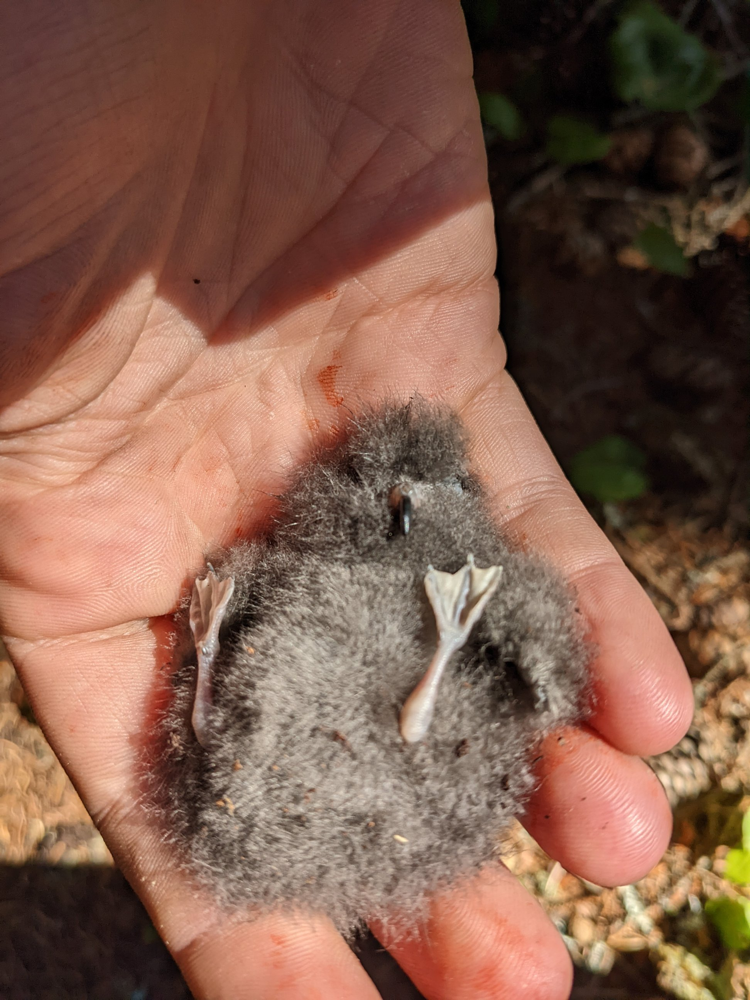
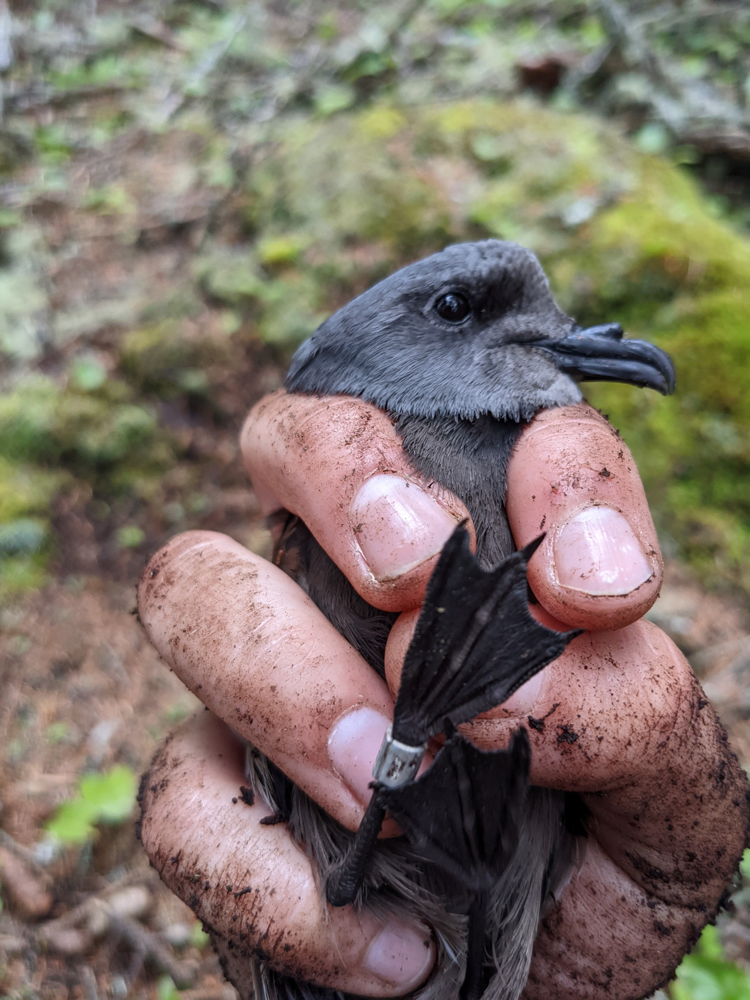
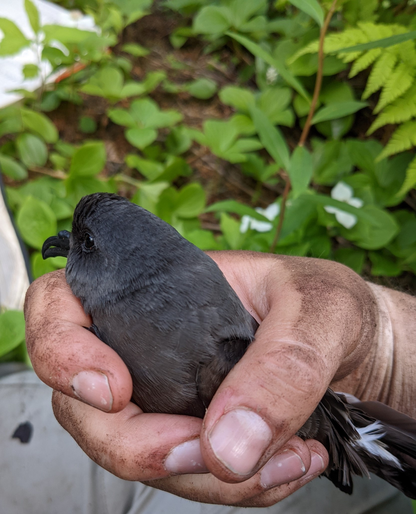
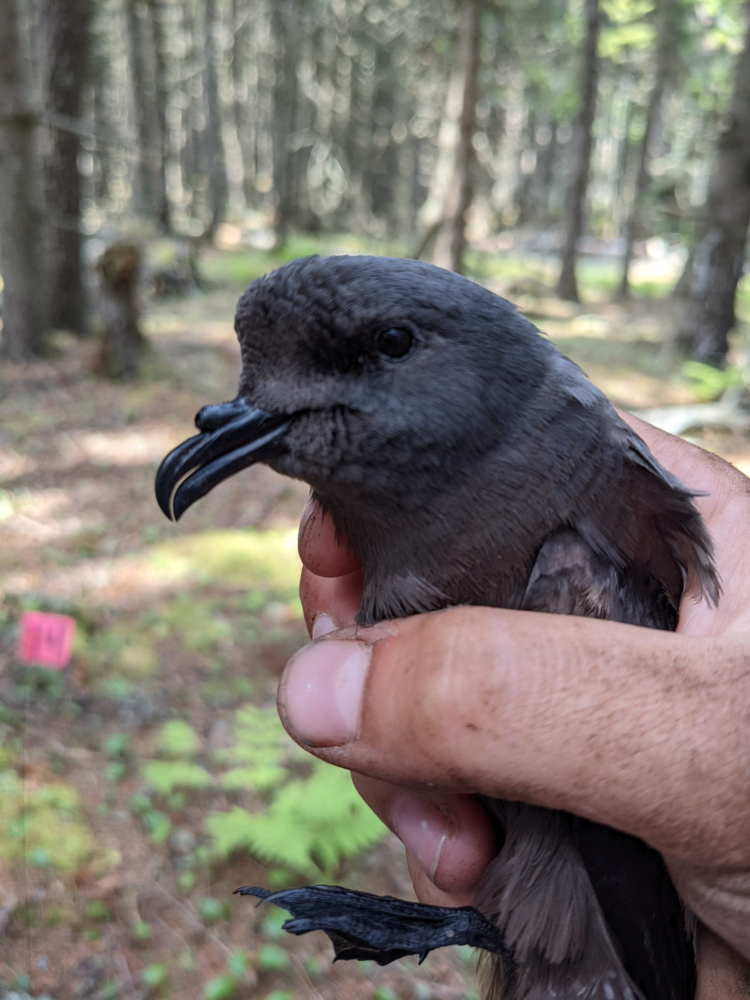
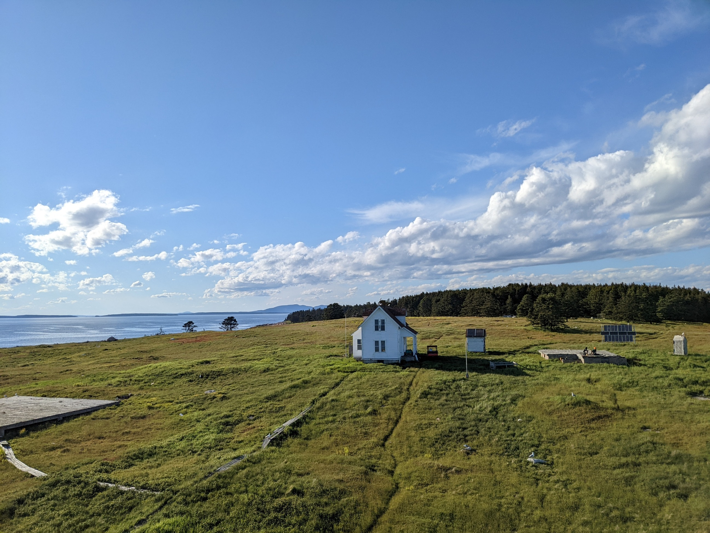
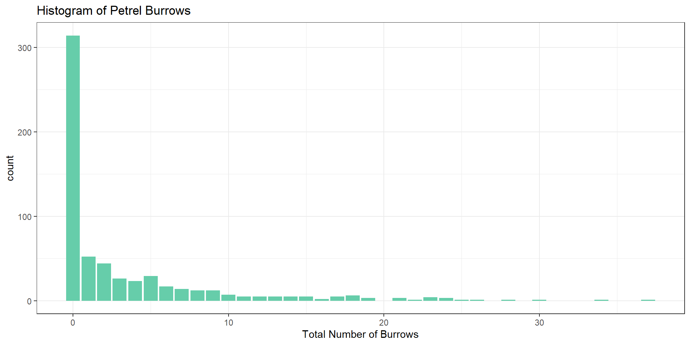
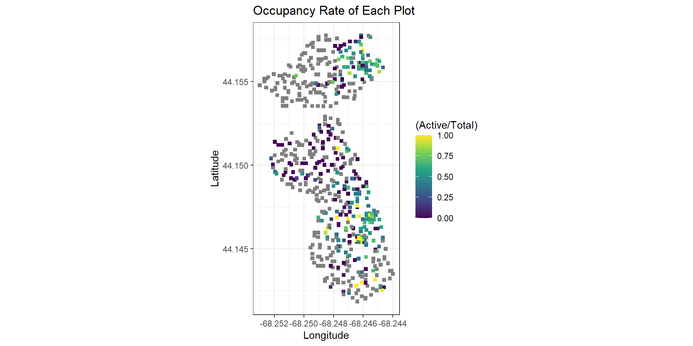
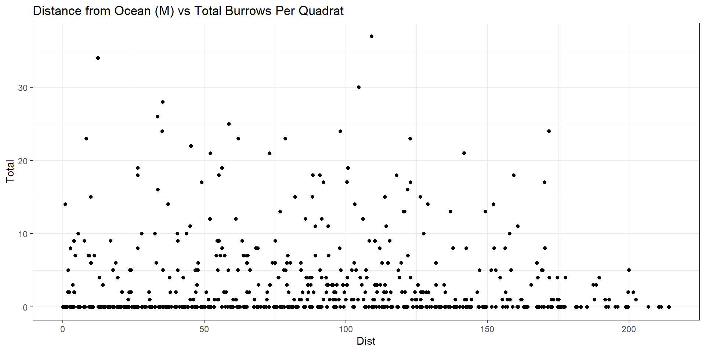
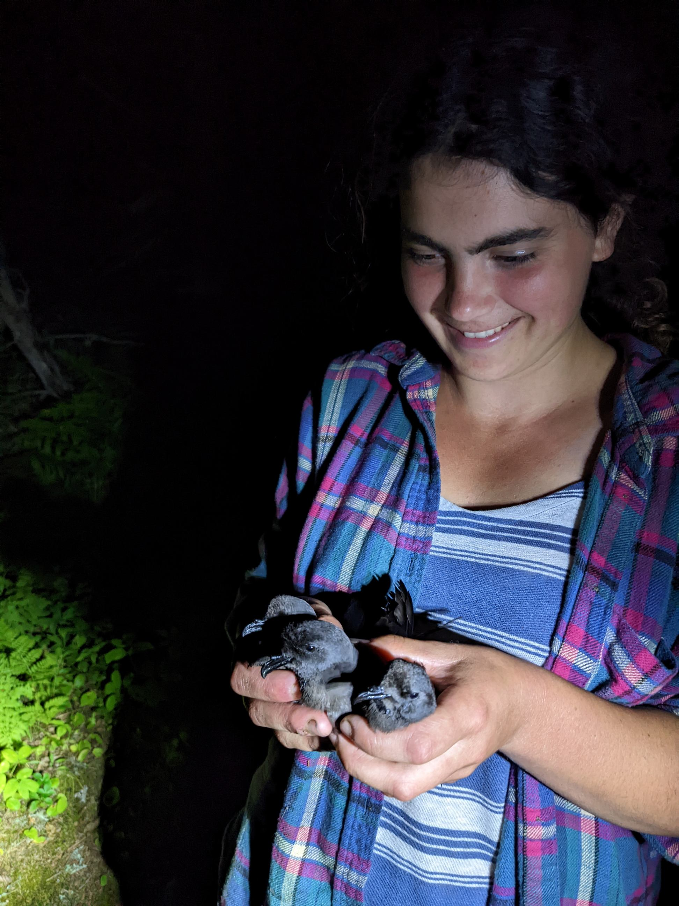

Great Duck Island Storm Petrels
Leach’s Storm Petrel
Leach’s Storm Petrel



Data source: Gnam and Sheridan 2023.
Study Site
Methods
Methods


Data

Variables of Interest
- Side of island
Variables of Interest
- Side of island
- Distance to Ocean

Histogram

Histogram (nonzero counts)
In case you were curious…


Are the data overdispersed?
- Poisson distribution assumes:
\[ {\frac{variance}{mean}} \approx 1 \]
Zero-inflated GLM
- Two different models

Can poisson error be met without 0s?
Verbal Model - Poisson ANVOCA
- Does distance to the coast and side of the island impact petrel burrow counts?
| Source | DF | Fctr/Cov | R/F |
|---|---|---|---|
| Side | 1 | Fctr | fixed |
| Dist | 1 | Cov | fixed |
| SidexDist | 1x1 | ff |
Response variable: count of burrows in quadrat
ANOVA
Poisson ANCOVA for non-zero data
\[ Total = e^\eta + \varepsilon \] \[ \eta = \beta_0 + \beta_dX_d +\beta_sX_s + \beta_{d x s}X_dX_s \]
Where: d = distance to ocean s = East/West side of island Poisson error distribution
Poisson ANCOVA model in R


Poisson ANCOVA model in R
Call:
glm(formula = Total ~ Dist + Side + Dist * Side, family = poisson(link = log),
data = nonzero)
Coefficients:
Estimate Std. Error z value Pr(>|z|)
(Intercept) 1.729294 0.119517 14.469 < 2e-16 ***
Dist -0.004789 0.001156 -4.143 3.43e-05 ***
SideW 0.483828 0.129603 3.733 0.000189 ***
Dist:SideW 0.002607 0.001273 2.048 0.040546 *
---
Signif. codes: 0 '***' 0.001 '**' 0.01 '*' 0.05 '.' 0.1 ' ' 1
(Dispersion parameter for poisson family taken to be 1)
Null deviance: 1565.0 on 293 degrees of freedom
Residual deviance: 1387.1 on 290 degrees of freedom
AIC: 2380.2
Number of Fisher Scoring iterations: 5Maybe a Gamma distribution?


Maybe a Gamma distribution?
Call:
glm(formula = Total ~ Dist + Side + Dist * Side, family = Gamma(),
data = nonzero)
Coefficients:
Estimate Std. Error t value Pr(>|t|)
(Intercept) 0.1638703 0.0479744 3.416 0.000727 ***
Dist 0.0013250 0.0005319 2.491 0.013296 *
SideW -0.0559233 0.0503825 -1.110 0.267930
Dist:SideW -0.0010386 0.0005586 -1.859 0.063996 .
---
Signif. codes: 0 '***' 0.001 '**' 0.01 '*' 0.05 '.' 0.1 ' ' 1
(Dispersion parameter for Gamma family taken to be 0.7872139)
Null deviance: 262.46 on 293 degrees of freedom
Residual deviance: 230.06 on 290 degrees of freedom
AIC: 1664.4
Number of Fisher Scoring iterations: 6Will proceed with poisson.
Verbal Model - Neg. Binomial GzLM
- Does distance to the coast and side of the island impact presence of petrel burrows?
| Source | DF | Fctr/Cov | R/F |
|---|---|---|---|
| Side | 1 | Fctr | fixed |
| Dist | 1 | Cov | fixed |
| SidexDist | 1x1 | ff |
Response variable: presence of burrows in quadrat
ANOVA Table
Negative Binomial GLM
\[ Odds = e^\eta \]
\[ \eta = \beta_0 + \beta_dX_d +\beta_sX_s + \beta_{d x s}X_dX_s \]
Where: d = distance to ocean s = East/West side of island Error distribution is binomial/ Bernoulli
Neg. Binoimial GLM in R


Neg. Binoimial GLM in R
Neg. Binoimial GLM in R
Call:
glm(formula = Present ~ Dist + Side + Dist * Side, family = binomial(link = logit),
data = all)
Coefficients:
Estimate Std. Error z value Pr(>|z|)
(Intercept) -1.635830 0.278333 -5.877 4.17e-09 ***
Dist 0.005048 0.002443 2.067 0.0388 *
SideW 1.918985 0.357368 5.370 7.88e-08 ***
Dist:SideW 0.001773 0.003495 0.507 0.6120
---
Signif. codes: 0 '***' 0.001 '**' 0.01 '*' 0.05 '.' 0.1 ' ' 1
(Dispersion parameter for binomial family taken to be 1)
Null deviance: 842.21 on 607 degrees of freedom
Residual deviance: 699.34 on 604 degrees of freedom
AIC: 707.34
Number of Fisher Scoring iterations: 4The Zero Inflated GLzM
library(pscl)
zeroInflated <- zeroinfl(Total ~ Dist+Side+Dist*Side |
Dist+Side+Dist*Side,
dist = 'poisson',
data = all)
summary(zeroInflated)
Call:
zeroinfl(formula = Total ~ Dist + Side + Dist * Side | Dist + Side +
Dist * Side, data = all, dist = "poisson")
Pearson residuals:
Min 1Q Median 3Q Max
-1.5947 -0.8068 -0.4596 0.1611 8.0925
Count model coefficients (poisson with log link):
Estimate Std. Error z value Pr(>|z|)
(Intercept) 1.749518 0.123315 14.187 < 2e-16 ***
Dist -0.005510 0.001254 -4.394 1.11e-05 ***
SideW 0.464602 0.133155 3.489 0.000484 ***
Dist:SideW 0.003306 0.001363 2.425 0.015309 *
Zero-inflation model coefficients (binomial with logit link):
Estimate Std. Error z value Pr(>|z|)
(Intercept) 1.6771608 0.2841251 5.903 3.57e-09 ***
Dist -0.0062192 0.0025813 -2.409 0.016 *
SideW -1.9568037 0.3621482 -5.403 6.54e-08 ***
Dist:SideW -0.0006878 0.0036027 -0.191 0.849
---
Signif. codes: 0 '***' 0.001 '**' 0.01 '*' 0.05 '.' 0.1 ' ' 1
Number of iterations in BFGS optimization: 12
Log-likelihood: -1532 on 8 DfE2 <- resid(zeroInflated, type = "pearson")
N <- nrow(all)
p <- length(coef(zeroInflated)) + 1 # '+1' is due to theta
sum(E2^2) / (N - p)[1] 2.058631Likelihood Ratio for Side
- *Excluding interaction term, since the coefficient is very small.
withoutSide <- zeroinfl(Total ~ Dist | Dist, dist = 'poisson', data = all)
withSide <- zeroinfl(Total ~ Dist + Side| Dist + Side, dist = 'poisson', data = all)
library(lmtest)
lrtest (withoutSide, withSide)Likelihood ratio test
Model 1: Total ~ Dist | Dist
Model 2: Total ~ Dist + Side | Dist + Side
#Df LogLik Df Chisq Pr(>Chisq)
1 4 -1669.9
2 6 -1535.4 2 269.01 < 2.2e-16 ***
---
Signif. codes: 0 '***' 0.001 '**' 0.01 '*' 0.05 '.' 0.1 ' ' 1LR for Distance from Ocean
withoutSide <- zeroinfl(Total ~ Side | Side, dist = 'poisson', data = all)
withSide <- zeroinfl(Total ~ Dist + Side| Dist + Side, dist = 'poisson', data = all)
library(lmtest)
lrtest (withoutSide, withSide)Likelihood ratio test
Model 1: Total ~ Side | Side
Model 2: Total ~ Dist + Side | Dist + Side
#Df LogLik Df Chisq Pr(>Chisq)
1 4 -1556.8
2 6 -1535.4 2 42.972 4.663e-10 ***
---
Signif. codes: 0 '***' 0.001 '**' 0.01 '*' 0.05 '.' 0.1 ' ' 1Is distance to ocean ecologically meaningful?
Bonus: Occupancy Rate
- Adding soon
Questions?
